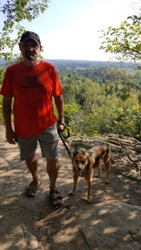
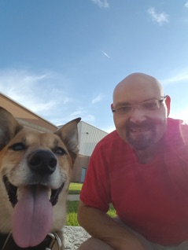
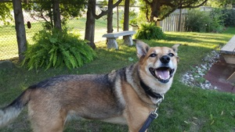
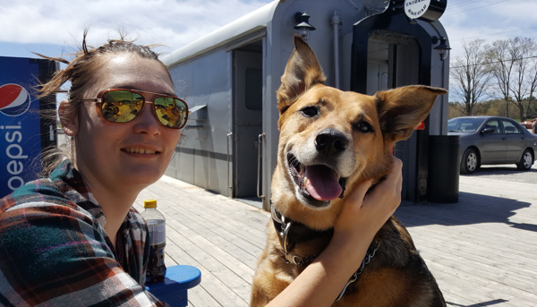
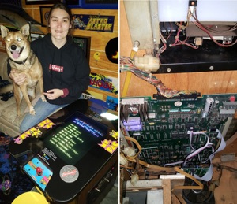
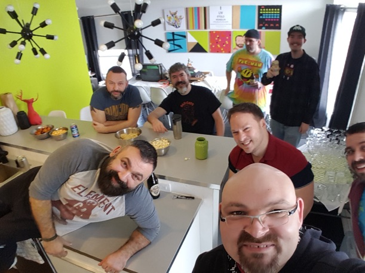
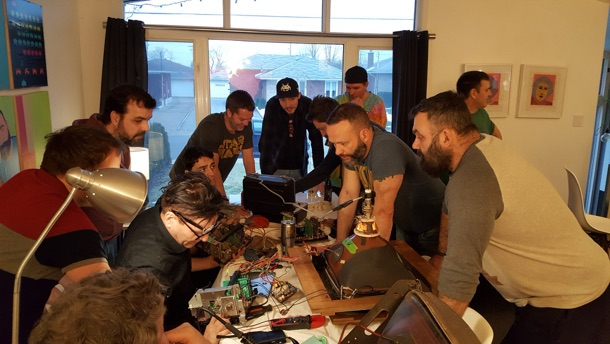
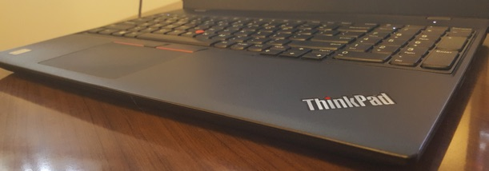
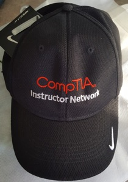
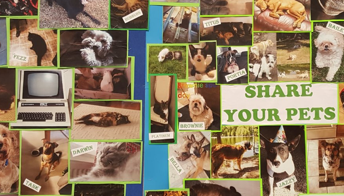

2018 in review...
Friday, December 21, 2018
At the end of each year, I take some time to reflect on the previous year - it provides perspective, and is a lot of fun! For me, 2018 was the year I spent a lot of time improving myself physically, challenging myself mentally, and most importantly, enjoying life!
On the personal side, I cut out breads/starches/alcohol and upped my indoor and outdoor exercise to lose a whopping 85 pounds since mid 2017 - I feel great, have loads of energy, and no longer have any back pain whatsoever!
Yes, I count calories, walk everywhere I can instead of driving, go to the gym when it’s crappy outside, and say no to a lot of food at every social event. It’s a lifestyle change that I’ll be continuing forever, and one I’d certainly recommend for anyone.
I also spent a massive amount of time hiking (mostly in the beautiful Halton region), swimming, relaxing and enjoying my backyard this summer:






The picture above is of my daughter Mackenzie and dog Pepper at Weber’s Burgers near Orillia - we went there for her birthday this year, and then headed to Wasaga Beach and then Balm Beach. Mackenzie is moving to Australia in 2019 to do a work placement (something she is very excited about).
Earlier this year, she also helped me install a multi-game kit in my Ms. Pac-man arcade table (surprisingly, it worked the first time too, which is pretty amazing for 35-year-old electronics).
Speaking of arcades, I’ve definitely played a lot of my own arcade machines this year (it’s great exercise, actually!). Earlier this year, Sam and Pat organized a great arcade get-together, dinner party and repair workshop at their home, which was a blast. They also have an arcade machine collection that is truly epic too!


On the computing side of things, I ditched Facebook and never looked back. I also got comfy with Twitter and LinkedIn (I really like both of these social media platforms), as well as said goodbye to my 12-year-old Apple PowerBook G4 (the laptop that did the work of a dozen laptops, and that I wrote over a dozen books on). But I have a nice new laptop to take its place: a Thinkpad P52S with 32GB DDR4 RAM, dual NVMe SSDs, 8th generation Core i7, and NVidia Quadro graphics (you can actually get a P52 with up to an 8th generation Xeon and 128GB of RAM). It’s thin, powerful, and built like a tank...... it runs Linux lightning fast, and most importantly, it has the best keyboard I’ve ever used on a laptop (seriously, it’s like crack).

2018 was also a stellar year for me with my extracurricular endeavors! Each year, I try to do something that is out of my comfort zone to build my analytical, technical and software engineering skills. This year I managed to learn the IBM Z mainframe platform (I have a whole new respect for the power and design of these amazing machines), as well as the Rust programming language (which is equally amazing) and a few new Javascript frameworks. I single-handedly created a complex custom container loader for use with a simulation at UW - in the end, it was the most complex and brilliant software engineering that I’ve done in my life! After finishing up my work with UW/IBM, I helped write an associated journal article, but nearly everything I said was heavily edited to the point where it lost the key points I wanted to make. At least they kept my regression analysis (they can’t edit the numbers ;-).
I also got asked to do a lot of stuff for the tech community outside of all of this (apparently, word gets around the K-W region fast!). Long story short, I did a lot of work (support, coding, devop setup, Jamf deployment) for various incubators and tech startups, as well as gave a lot of presentations (WWITPRO, UW, KW-LUG, HackerPro).

On the work front, 2018 marked my 20th year of teaching in the college sector (April 1998). My organization scaled back the scope of my job to just include IT (and our app dev program for the time being), but at least I got to create the 5th edition of my bestselling Linux textbook for Cengage.
And with CompTIA and the Linux Professional Institute (LPI) parting ways this year, it gave me a neat challenge that allowed me to create a really amazing Linux textbook. I’ve enjoyed writing the 5th edition of this textbook more than any other book I’ve written in the past!!!

Linux was a heavy focus for me all year long - I wrote a lot of Linux-related blog posts for CompTIA, as well as presented their Linux+ Deep Dive and XK0-004 Sneek Peek webinars. They even came through with scoring me a new CompTIA Nike Golf cap to replace my old one that wore out (it’s the only cap that actually fits my head - I’ve never been able to wear caps prior to this one).
But perhaps the most interesting part of this year was that I was thanked in the forward of an erotic romance novel (below) for providing the computer hacker related subject matter expertise!
If that isn’t a life goal, I don’t know what is ;-)
